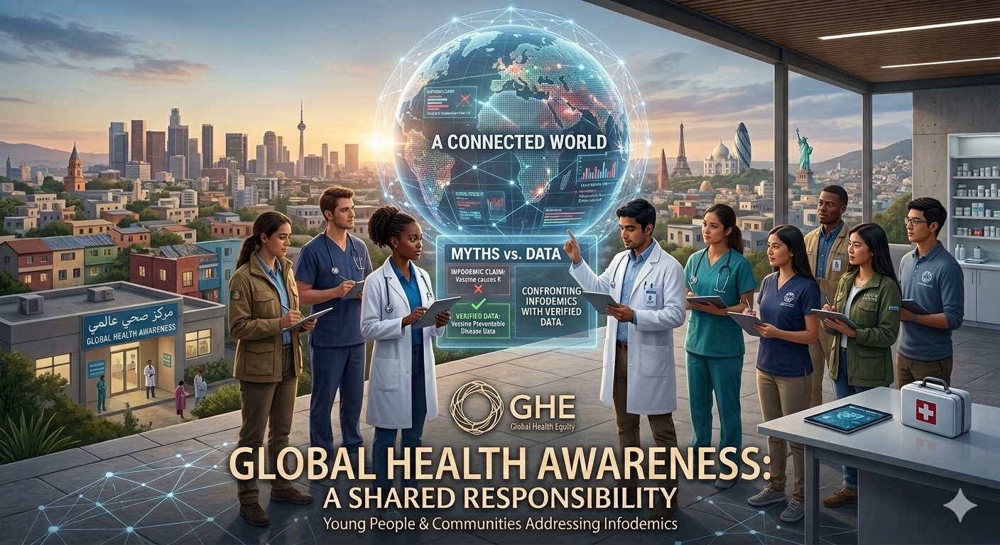

03
GLOBAL AWARENESS PATHWAY
From Awareness to Action
Move from knowing about global health to knowing what you can do—individually and together—when a trusted public-health authority announces a threat.
The goal is not professional epidemiology. It is responsible, age-appropriate participation: know, verify, protect, communicate, support and act.

FROM AWARENESS TO ACTION
04 · WHAT CAN I DO?
When a trusted authority announces a health threat.
GHE asks a practical adolescent question: What should I know, what can I do, and how can I participate?
VACCINES & ACTION
Prevention is participatory.
Vaccination is one example of how individual decisions, public-health programs and global cooperation can intersect.
FROM AWARENESS TO ACTION
Awareness → Understanding → Participation → Responsible Action
Global citizenship is not about doing everything. It is about knowing what is appropriate for you, acting responsibly and contributing to healthier communities.
Ask yourself
Could I explain why trusted sources matter? Could I recognize a misleading health claim? Could I help someone find official information without spreading fear or stigma?
Lead by being trustworthy.
Good global health citizenship begins with humility, evidence, respect, listening and a willingness to correct ourselves when better information becomes available.
KNOWLEDGE CHECK
MCQ Set 3 — From Awareness to Action
Scenario-based questions about yourself, family, school, community and responsible global participation.